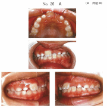
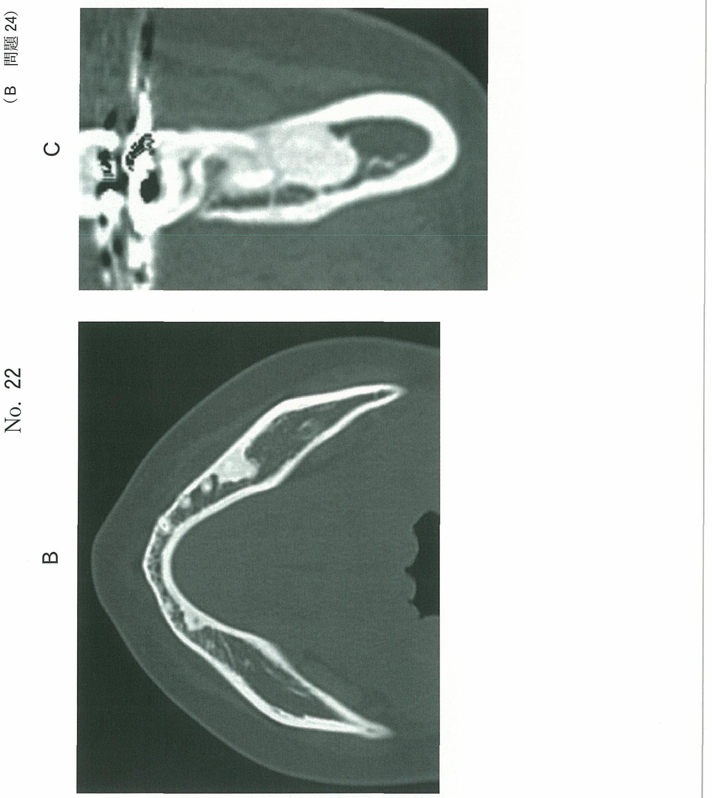
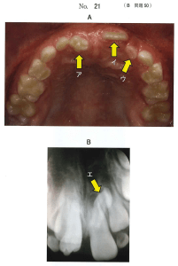
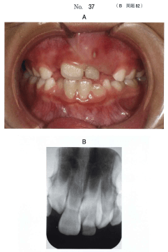
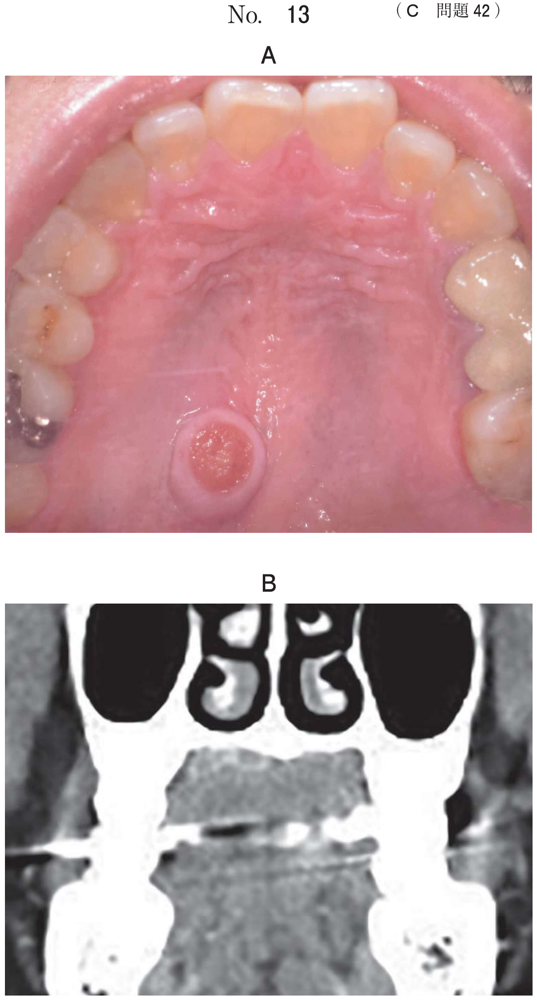
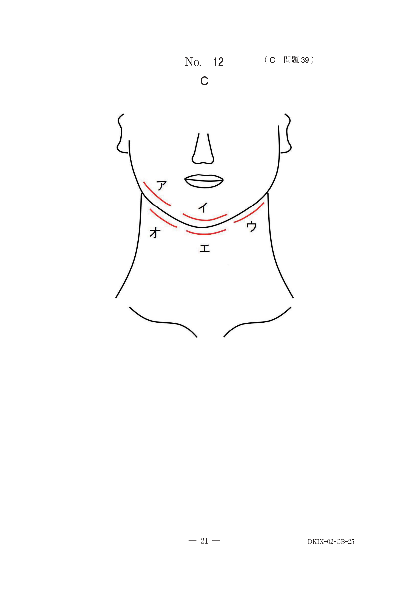

小児の抜歯
乳歯抜歯の適応症
①病的な状態の乳歯（保存不可能）
- 歯冠の崩壊が著しい（防湿困難）
- 根尖病巣が大きく治癒の可能性が低い
- 歯根尖露出乳歯
- 外傷により保存不可能な歯根破折歯・陥入歯
②咬合誘導上抜去を要する乳歯
- 脱落期による動揺乳歯
- 乳歯の晩期残存
- 後継永久歯の萌出を障害している先行乳歯
- 乳歯の保存により咬合や歯列の異常を起こすおそれのある場合
③その他
- 過剰歯や埋伏歯（後継永久歯の歯根吸収リスク）
- 授乳困難をきたす先天歯
- 骨折線上の乳歯
過剰歯抜歯の判断（頻出）
- 後継永久歯の歯根吸収の可能性
- 永久歯の萌出障害・萌出遅延
- 正中離開の原因
- 永久歯の位置異常
過剰歯の位置・方向はCTで確認し、抜歯時期を決定する
乳歯抜去の留意事項
| 項目 | 留意点 |
|---|---|
| X線確認 | 乳歯と永久歯の位置関係を確認、後継永久歯に損傷を与えない |
| 歯根吸収様式 | 上顎乳前歯：唇側に屈曲、下顎乳前歯：舌側から吸収開始 |
| 掻爬 | 後継永久歯胚を考慮し不要な掻爬は避ける |
| 誤飲防止 | 抜去歯の誤飲・気管内吸引に注意 |
乳歯の抜歯方法
| 歯種 | 抜歯方法 |
|---|---|
| 乳切歯（単根） | 回転＋近遠心的に揺さぶりながら抜去 |
| 乳臼歯（複根） | 歯根の離開が大きく彎曲→歯根分割を行うこともある |
乳切歯は唇舌方向には揺さぶらない（歯根尖の形態上）
過去問
6歳の男児。前歯の裏から歯が生えたことを主訴として来院した。口腔内写真（別冊No.47A）とエックス線写真（別冊No.47B）とを別に示す。咬合誘導のため下顎乳切歯を抜去することとした。抜歯部位と抜歯時の注意点との組合せで正しいのはどれか。1つ選べ。


b A┳A──────唇側に揺さぶりながら抜去する。
c BA┓──────回転を加えながら抜去する。
d A┳A──────回転と近遠心的に揺さぶりながら抜去する。
e BA┓──────回転と唇舌的に揺さぶりながら抜去する。
【解説】永久歯が舌側に萌出しているため、咬合誘導のため乳切歯を抜歯する。乳切歯は単根歯であり、回転＋近遠心的に揺さぶりながら抜去する。唇舌方向への揺さぶりは不適切。
6歳の男児。上顎左側中切歯が萌出してこないことを主訴として来院した。初診時の口腔内写真（別冊No.26A）、エックス線写真（別冊No.26B、C）及びそのトレース図（別冊No.26D）を別に示す。まず行うのはどれか。1つ選べ。


b イの抜歯
c ウの抜歯
d ウの開窓牽引
e ウの萌出観察
【解説】X線で過剰歯が上顎中切歯の萌出を障害していることがわかる。まず過剰歯の抜歯を行い、萌出障害を除去する。
8歳の女児。上顎前歯部の精査を希望して来院した。半年前に└Aが脱落し後継永久歯が萌出してきた。1か月前にA」が脱落し萌出してきた歯の形態の異常に気付いたという。初診時の口腔内写真（別冊No.21A）とエックス線画像（別冊No.21B）を別に示す。まず行うのはどれか。1つ選べ。

b アの形態修正
c イの近心移動
d ウの抜歯
e エの抜歯
【解説】形態異常のある歯（ア）は過剰歯と考えられる。過剰歯が存在すると正常な永久歯の萌出・配列を妨げるため、過剰歯の抜歯を行う。
7歳の男児。上顎左側乳中切歯が生え代わらないことを主訴として来院した。A┘は6か月前に脱落し、後継永久歯が萌出してきたという。3歳ころに上顎乳前歯部に外傷の既往がある。診察と検査の結果、└Aを抜歯することとした。初診時の口腔内写真（別冊No.37A）とエックス線画像（別冊No.37B）を別に示す。抜歯の根拠はどれか。2つ選べ。

b └Aの齲蝕
c └Aの歯根露出
d └1の萌出遅延
e 1┘の位置異常
【解説】抜歯の根拠は└Aの歯根露出と└1の萌出遅延。乳歯の晩期残存が後継永久歯の萌出を障害している。歯根露出は病的状態であり抜歯適応となる。
7歳の男児。上顎左側乳中切歯が生え代わらないことを主訴として来院した。A┘は6か月前に脱落し、後継永久歯が萌出してきたという。└Aの動揺度は0度である。初診時の口腔内写真（別冊No.24A）とエックス線画像（別冊No.24B、C）を別に示す。抜歯を要するのはどれか。1つ選べ。


b イ、ウ
c ア、イ、ウ
d ア、ウ、エ
e ア、イ、ウ、エ
【解説】X線画像を詳細に読影し、晩期残存乳歯、過剰歯など抜歯が必要な歯を判断する。後継永久歯の萌出障害や位置異常のリスクを考慮する。
9歳の男児。かかりつけ歯科医で過剰歯を指摘され来院した。全顎的に精査するためパノラマエックス線とCTを撮影した。診断の結果、過剰歯を抜去することとした。初診時の口腔内写真（別冊No.25A）、エックス線画像（別冊No.25B）及びCT（別冊No.25C）を別に示す。抜歯の根拠はどれか。1つ選べ。


b 鼻腔を貫通する可能性がある。
c 上顎左側中切歯の歯根が未完成である。
d 上顎左側中切歯の歯根吸収の可能性がある。
e 上顎左側中切歯が交叉咬合になる可能性がある。
【解説】過剰歯抜歯の最も重要な根拠は後継永久歯の歯根吸収の可能性。過剰歯が永久歯に近接していると歯根吸収を引き起こすリスクがあるため、早期の抜歯が推奨される。